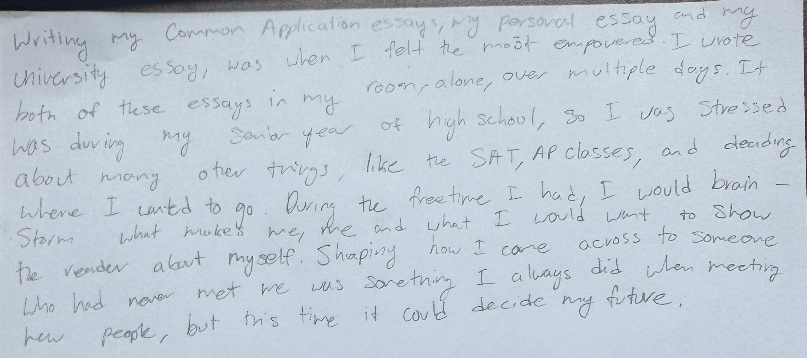

In-Class Writing for MP2
A short handwritten piece about the time I felt the most empowered in my writing.

Write about a time when you felt the most empowered in your writing.
Writing my Common Application essays, my personal essay and my university essay, was when I felt the most empowered. I wrote both of these essays in my room, alone, over multiple days. It was during my senior year of high school, so I was stressed about many other things, like the SAT, AP classes, and deciding where I wanted to go. During the free time I had, I would brainstorm what makes me, me and what I would want to show the reader about myself. Shaping how I came across to someone who had never met me was something I always did when meeting new people, but this time it could decide my future.